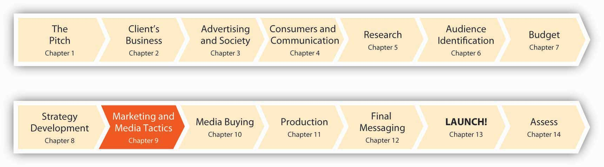

Figure 9.1 Six Months to Launch!
The advertiser’s toolbox is a deep one, and it’s expanding by leaps and bounds. Indeed, the problem often is to figure out which tool—or even better, combination of tools—will work best to solve a specific strategic issue. In the old days (say, fifteen to twenty years ago), agencies tended to have one approach that they used over and over for every client. Good at doing TV commercials? Shoot them for everyone. Specialize in outdoor? Roll out the poster boards. But yesterday’s “hammer in search of a nail” approach won’t cut it anymore.
Today it’s more common for agencies to think about themselves as being not so much in the advertising business as in the communications business. Sure, that’s just a word change—but the implications are huge. This switch is a constant reminder that we need to consider any way to communicate with customers that makes sense for that particular segment—and there’s often more than one way to skin a cat.
The integrated marketing communications perspectiveA marketing strategy that blends many diverse elements so that the client’s message touches the customer in the same way regardless of where this interaction occurs. emphasizes the careful, strategic blending of many diverse elements to be sure that the client’s message touches the customer in the same way regardless of where this interaction occurs. That sounds like plain common sense, but you’d be surprised how often it’s a problem—especially in an industry where a client might give its advertising business to one agency, hire a separate firm to handle its public relations, and have still another conduct sales promotions.
Most major agencies today practice the integrated marketing approach in some way, often by starting new divisions to handle areas they didn’t tackle before, or buying (or allying with) smaller, specialized shops that are already experts. The client is ultimately accountable for managing its agencies in a way that supports its overall communications vision. For example, SS+K worked with msnbc.com’s search agency 360i to support the integrated branding campaign. (You’ll learn more about the way they worked together soon.) Marketers are the people most conscientious about coordinating all of the messages that customers receive, but they rely on their agencies to be vigilant about this as well. So, let’s summarize what an integrated perspective emphasizes:
All of us are better than each of us.
The point of strategic communication is to use the best tools available to effect the desired change in the marketplace. SS+K, like some other agencies, no longer draws hard-and-fast distinctions among functions such as advertising, promotions, direct marketing, and digital and public relations. SS+K’s goal is to achieve synergy among all the efforts that emanate from the msnbc.com brand—to choose the best tools for the job, not the ones that are most expected or familiar.
Compared to the “silos” that pervade some agencies, agency creative director Marty Cooke sees more value in combining disciplines than isolating them:
“The basic core idea of SS+K…is to get the different disciplines of communications, writers, art directors, designers, planners, strategy people, researchers, public relations guys, public affairs guys, digital people, direct mail people, whoever else you need, around the table, the biggest brains you can get and let the sparks fly. And that’s been kind of the magic of this place ever since we started it, and it’s worked out very well.”—Marty Cooke, Agency Creative Director
Thinking Differently
(click to see video)Marty describes how SS+K found the integrated approach.